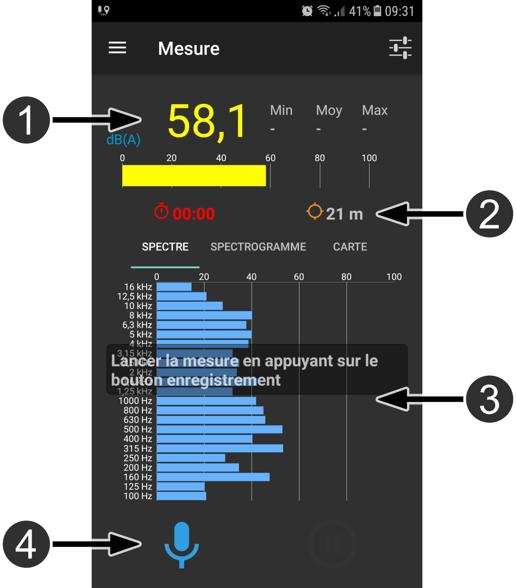
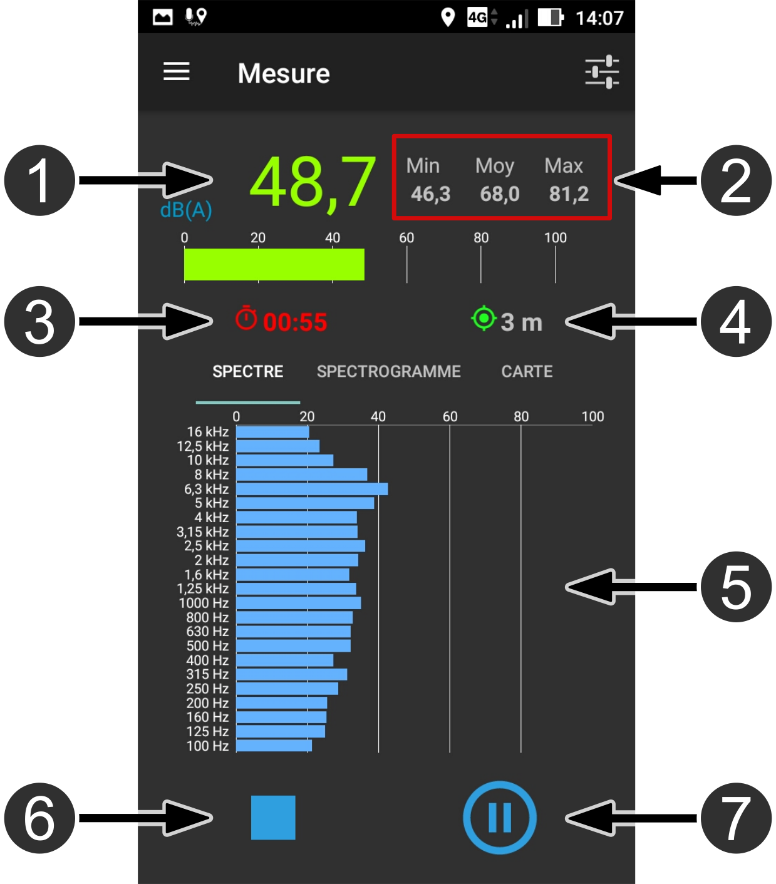
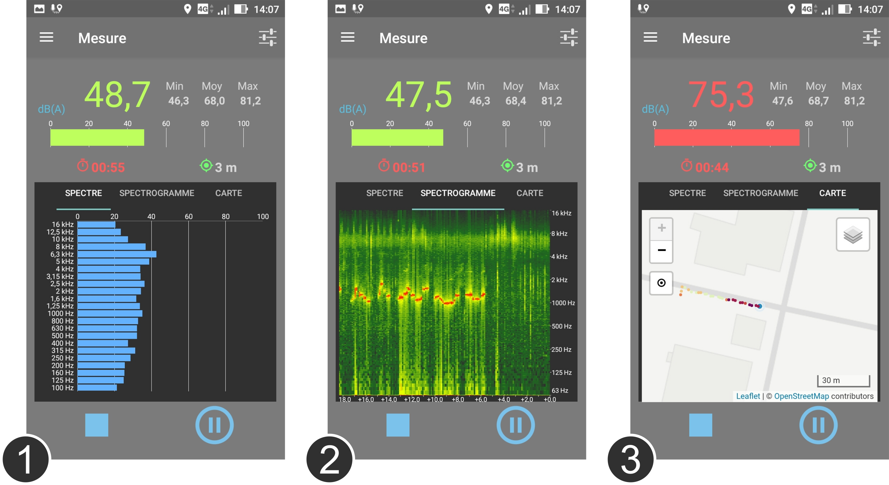
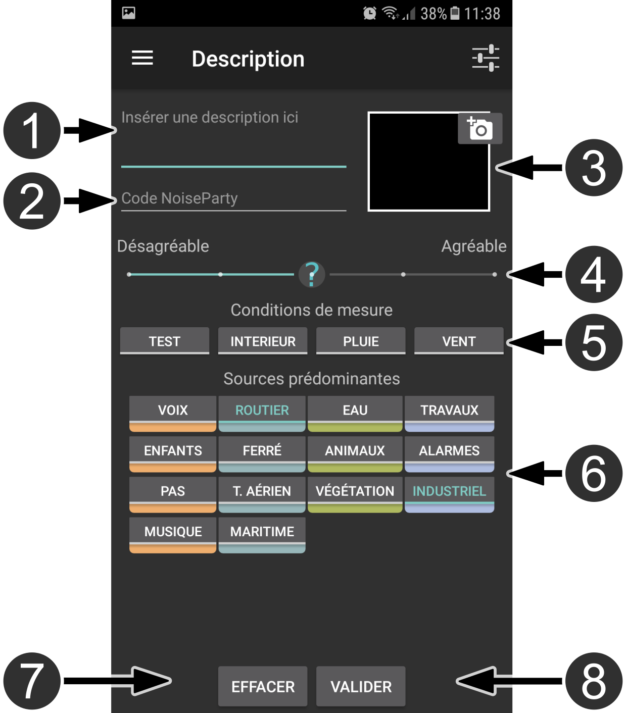
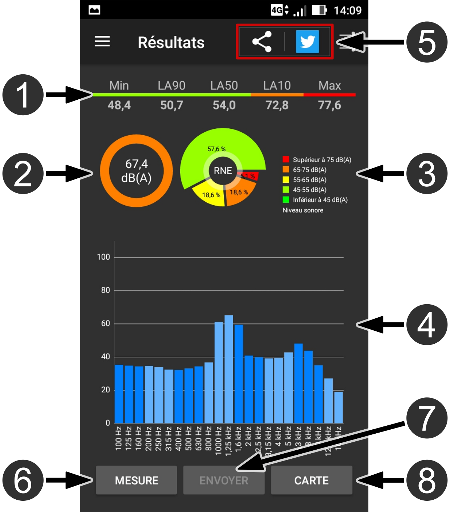
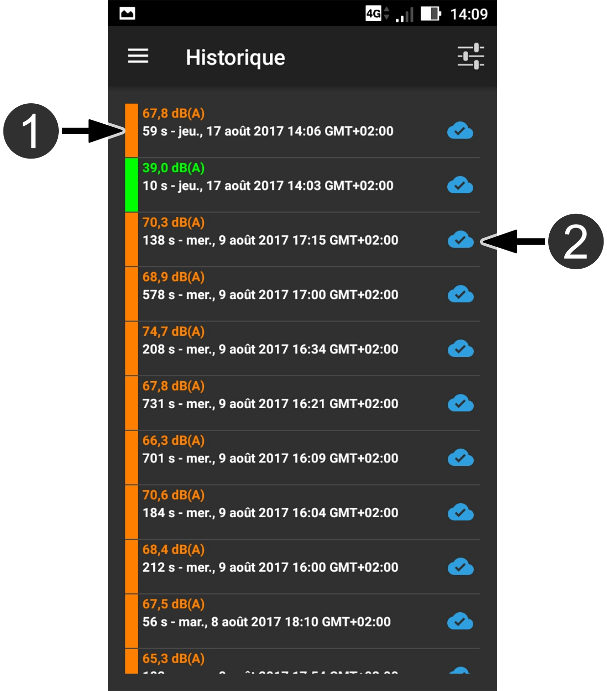

NoiseCapture protocol
NoiseCapture protocol
In this page you will find informations about the use of the NoiseCapture app.
In this page you will find informations about the use of the NoiseCapture app.
NoiseCapture is an Android application. To install it, you have to follow these instructions:
You can also click
on the following shortcut ...

...or flash the this QR Code.

Alternatively, you can also download NoiseCapture from the free Aptoide store.

Below is presented a full description on how to use NoiseCapture, allowing to record noise in a good conditions:
To use NoiseCapture, there is only two requirements:
Once you launched the application, you will arrive on this "home page" (see on the right). In this interface, you have:


Once you started the recording (you clicked on the dedicated icon), you obtain this interface (on the left), with the following informations:
During the recording, you have the possibility to change the representation mode. Here, by clicking on the dedicated tabs, you have the choice between:


When your measure is finished, you are invited* to describe your track through the following entries:
Once you validated the description part, you can see the resulting measure informations. Here you have:


In the map panel, you have:
In the application menu, you can access to the "History" page. Here you can:

Guidelines for a relevant measure:
Practical tips for measurement: